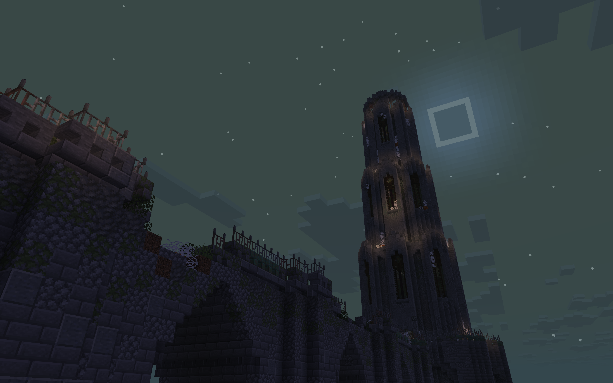
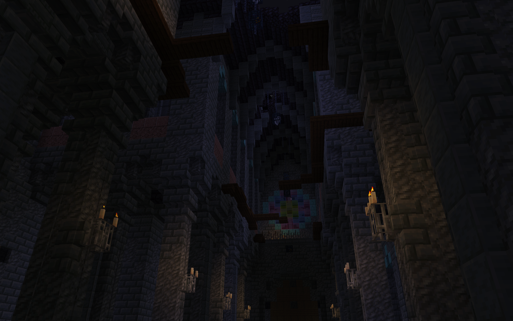

The world is awash in darkness. The Academics felt it: in the frayed edges of our minds; injecting into the veins of the world; in our hubris at attempting to reach beyond the cosmos... and we shuddered at its reverberations. But beneath it, deep in the debris of its ruinous wake, there might still be hope. A hope that we don't have to be prisoners to our minds forever; that the world can still be mended; that we can conquer our fears once and for all.
My Protégé. Carry with you the glimmer of hope that, someday, this shroud of darkness might be lifted. My Protégé, please do right where we went so wrong...
–
In Chapter III: Luminary, you play as the Protégé, arriving to the remnants of the Aterean Empire to observe the cosmic darkness that has been summoned to it by the Academics and try to help rid it from the land. In the hunt to uncover 16 relics to offer back to the Sanctum's monument from the far-flung regions of the land, your adventure will take you into crumbling catacombs, derelict towers, soaring palaces, befouled lands... and even across space and time.
Featuring 4 unique biomes, custom items and unique monsters, Chapter III: Luminary presents a humble but rewarding conclusion to the Anthology collection; the summation of dungeon-crawling action, lore and storyelling woven into survival Minecraft.


